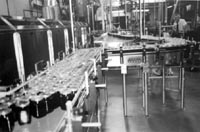
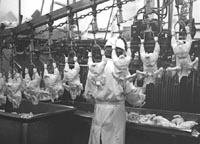
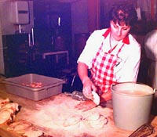
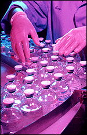

The food industry has two important functions:
|
|
History of the Food Industry The food industry became increasingly important as cities grew and developed. What began as a small scale, village type or home-based operation grew to the food chain of today where farmers are separated from the large food markets in the cities. Can you name any of the great food markets in London, England? We can divide the food industry into various sectors.
 Jam Making As an example of a primary industry, jam making converts raw fruit into freshly preserved jam. At the centre of a food processing plant is the processing line, where the product moves from raw material to finished product.  Poultry Processing In the primary processing of poultry, chickens, turkeys and other birds are cleaned, eviscerated and packaged for sale as fresh meat. They are sold either as whole birds, or cut up into parts. Poultry processing is one of the most efficient ways to produce fresh meat, making poultry in general, but particularly chicken, an economical and nutritious source of protein.  Secondary poultry processing is not a large segment of the industry, although some poultry is sold frozen or canned, or processed for sale to tertiary industries for use in prepared foods such as turkey pie or frozen dinners. In the graphic, chicken parts are breaded for sale. Convenience foods Tertiary food processing is a growing industry. Foods which save consumers time in the kitchen are part of modern day life. These foods require minimum preparation and are packaged for a long shelf-life with little loss of flavour and nutrients over time. Prepared foods, particularly those designed to be microwaved, make use of recent discoveries in food science and technology. How many tertiary processed foods can you find in your kitchen? How much more do we pay for the "convenience"? Foods for the Health Conscious The food industry responds to consumer tastes and demands. Increasingly health-conscious consumers want less sugar and cholesterol in their diet, and the food industry has responded by creating new low calorie products. The new foods may contain less sugar or fat, or may use substitutes for these ingredients. Food additives which mimic sweetness or the qualities of fat make these products possible. Foods low in salt appeal to consumers who want to limit sodium intake in their diet. A diet high in salt has been linked to high blood pressure, and since most foods contain enough salt naturally to supply nutritional needs, it makes sense to use less salt in food processing. The food industry is sensitive to the needs and demands of consumers, and has been quick to find new ways of making favourite and familiar foods even more nutritious while at the same time retaining the original appeal of the product. The processes and technology employed by the food industry make it a relatively easy matter to produce many different foods using less salt.  Food Research and Development The development of entirely new foods, the improvement of already known foods and better food safety are some of the major tasks of the food sciences. Research into new foods is a large and complex undertaking, involving universities, government, independent and corporate researchers. A more healthy lifestyle has been promoted which involves healthy eating coupled with activity. New foods that are low in fat and high in essential nutrients are key to this goal. The challenge of the agriculturist and food scientist is to create healthy foods while keeping their taste appearance and texture. Every year several thousand new food products appear on the shelves of grocery stores. Check out the careers section if you are interested in this field of work.
|